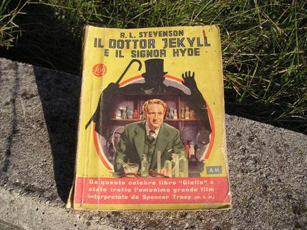

Uno dei libri della mia piccola biblioteca ai quali sono più affezionato (sono affezionato a tanti, in realtà!) è questo che si vede qui sotto in fotografia:

è l'edizione originale del 1946 dei Gialli Mondadori del capolavoro di Stevenson, "Lo strano caso del Dr Jekyll e Mr Hyde", uno dei racconti più noti, e forse non letto come meriterebbe.
Questa bella edizione ha anche il pregio di essere tradotta (da Ida Lori) in maniera elegante e assai più aderente allo spirito vittoriano di tante altre moderne e artefatte traduzioni.
Anch'esso ha contribuito a quell'imprinting che ha mi inoculato fin da giovane il virus chimico nel DNA.
Il racconto è uno dei più grandi e importanti classici della letteratura gotica, e si sviluppa tutto sulla eterna conflittualità tra la due dimensioni insite indissolubilmente nella natura umana in un equilibrio instabile, ovvero la coesistenza del Bene col Male, o viceversa.
Questo dualismo Bene-Male è comune in tanti stupendi classici di questo tipo di letteratura ottocentesca tipicamente anglosassone, da Poe (I racconti del mistero e del terrore), a Shelley (Frankenstein), a Wilde (Il ritratto di Dorian Gray), a Doyle (alcuni racconti di Sherlock Holmes), ecc...
Lo sdoppiamento della personalità è descritta in modo magistrale da Stevenson, con tutti gli ingredienti per rendere il racconto estremamente avvincente, inserito profondamente all'interno di quella ben definita società vittoriana già di per sè avvincente, almeno per chi scrive, per la sua abissale differenza tra di essa e la nostra mediterranea imprevedibilità.
Ho letto questo romanzo non so quante volte, e ogni volta, soprattutto da giovane, affascinato oltre che dal momento letterario, anche dalla parte "pratica" degli esperimenti del dottor Jekyll, alle prese con miscelazioni di sostanze finalizzate alla produzione di quell'elisir capace non solo di sdoppiare la personalità dell'individuo, ma di farlo addirittura producendo materialmente due individui completamente e fisicamente diversi.
Mettendo i due personaggi in provetta (anche Stevenson mi perdonerà...), potremmo scrivere la reazione:
Jekyll <---> Hyde con la doppia freccia dell'equilibrio (un equilibrio molto precario!).
Con sacrilega noncuranza potremmo perfino calcolarne la costante di equilibrio:
K = [Hy]/[Jk]
come se non sapessimo che tale costante riguarda non solo la coppia letteraria Jk/Hy, ma tutti noi...
L'analisi del laboratorio chimico del Dottor Jekyll mi sembra interessante, anche se purtroppo (e per forza!) Stevenson non può scendere in particolari.
Sentite questa nel testo originale:
-...a blood-red liquor, which was highly pungent to the sense of smell and seemed to me to contain phosphorus and some volatile ether...-
Per speculazione mentale che faccio per ridere (è lecito, no?) mi chiedo come chimico sperimentale: quale immaginaria sintesi organica avrà mai realizzato Jekyll?
E' significativo che Stevenson ci metta un solo elemento certo, il fosforo, elemento che racchiude in se il Bene e il Male, la vita e la morte.
E alla fine scopriamo che la terribile pozione non era più efficace per "tornare indietro", da Hyde a Jekyll, dal Male al Bene, non a causa della scarsa purezza dei reagenti, ma proprio per la "mancanza" di certe impurezze, impossibili per loro natura da determinare...
Quali saranno stati quei reagenti? Quali quelle misteriose impurezze...?
Naturalmente la risposta a queste domande è più che scontata... ma si sa, la fantasia, ancor più se evocata e stimolata da un buon libro, non ha limite.
In un altro piccolo particolare Stevenson è chimicamente preciso: quando fa suicidare in un momento drammatico il disperato Jekyll, ormai irreversibilmente prigioniero nel corpo e nell'anima di Hyde:
-...the crushed phial in the hand and the strong smell of kernels that hung upon the air...-
Senza nominarlo esplicitamente, mette in mano all'infelice protagonista il veleno più gotico che ci sia quale giudice supremo del suo destino: l'acido prussico.
Innumerevoli sono i racconti gialli e noir nei quali si avvelenano i personaggi con l'HCN... (mi viene in mente un altro vecchissimo giallo, "Un uomo qualunque"); in questi casi, ma vogliamo scherzare! il veleno DEVE essere "acido prussico", non chiamiamolo acido cianidrico per favore!
Come dicevo all'inizio, importante fu anche questo libro riguardo la mia passione per la chimica sperimentale (non l'ho letto nel 1946, sia ben chiaro...), e concludo con una prosaica riflessione sulla natura umana così assolutamente misteriosa nei suoi sviluppi: ci sono milioni di persone che hanno letto questo libro e che non sono state colpite dal virus chimico... e così altrettante considerazioni le possiamo fare su altre infinite cose.
A lungo termine, tutto è così imprevedibile!